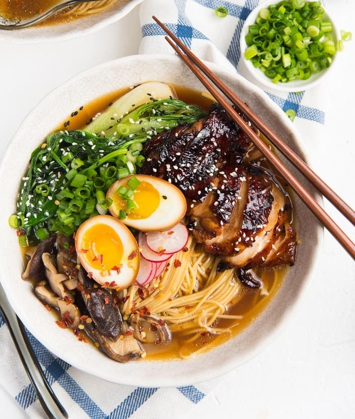
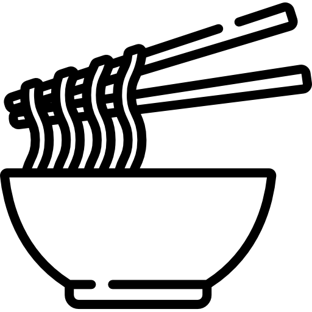

Wide variety of ramen flavors to choose from
 Fresh ingredients sourced from local markets
Fresh ingredients sourced from local markets

Handcrafted noodles made in-house daily
Vegetarian and vegan options available